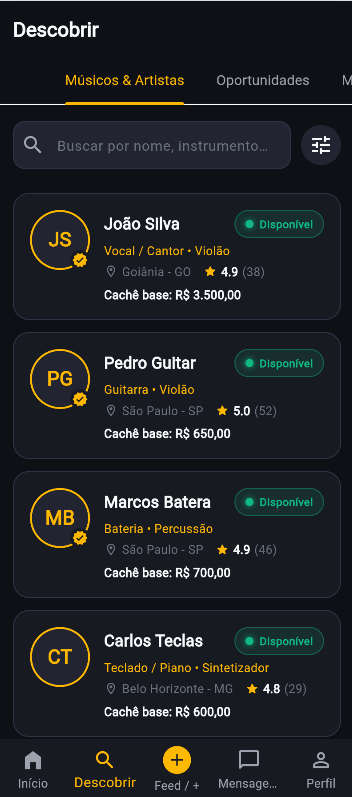
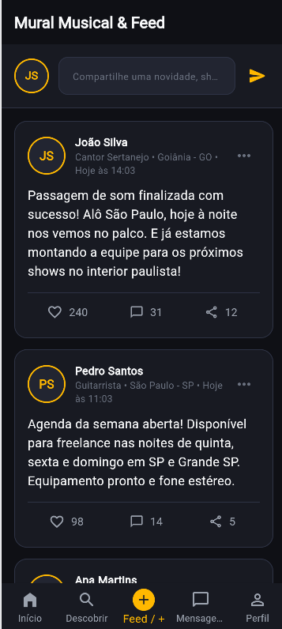
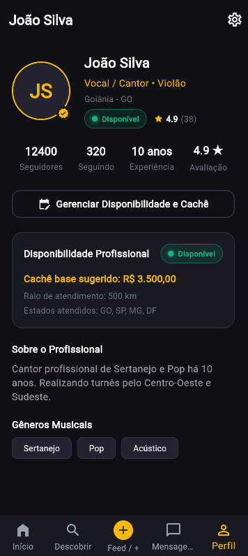

"Encontre músicos, encontre oportunidades e faça sua música acontecer em qualquer lugar."
Uma plataforma mobile de alta tecnologia que resolve a maior dor de cantores, bandas e produtores no Brasil: encontrar músicos qualificados e disponíveis em qualquer cidade ou estado para shows, gravações e turnês, com contratação segura, repertório digital e cachê transparente.
O mercado de shows ao vivo movimenta bilhões de reais, mas a contratação de músicos ainda ocorre de forma caótica através de grupos de WhatsApp, mensagens perdidas e indicações informais de última hora.
Um cantor vai realizar um show em outra cidade ou estado (ex: Goiânia para São Paulo) e precisa com urgência de baterista, guitarrista ou sanfoneiro que conheçam o repertório. Levar uma banda inteira tem custo altíssimo de aéreo, hotel e vans.
O artista abre o app, filtra a cidade do show, o instrumento necessário e a data exata. Encontra profissionais de ponta disponíveis na região, escuta os áudios no portfólio, envia o convite formal e fecha o cachê em poucos cliques.
Músicos competentes ficam com datas livres na agenda sem ter como divulgar sua disponibilidade profissional, perdendo dezenas de cachês todos os meses por falta de uma vitrine especializada.
O músico ativa o status 🟢 DISPONÍVEL, cadastra seu cachê base sugerido, raio de atendimento em km e recebe convites formais de trabalho com data, horário, local e valores garantidos.
A porta de entrada do aplicativo é orientada a resultados e rapidez. O usuário tem visão instantânea de oportunidades de trabalho, profissionais próximos e novidades musicais.
Busca multi-critério de alta precisão que permite filtrar por instrumentos, estilos musicais, cidades, estados, datas específicas de shows e faixas de cachê.

Diferente das redes sociais genéricas, aqui o algoritmo prioriza postagens relevantes ao ecossistema musical: abertura de agenda, vídeos de passagem de som e lançamentos.

Sistema de mensageria ágil integrado ao módulo de contratação. Reduz ruídos de comunicação e assegura que todas as partes tenham os detalhes confirmados.
O coração da plataforma. Cada perfil funciona como um currículo artístico vivo, completo com métricas de estrada, repertório, fotos, vídeos e raio de atendimento.

Arquitetura já desenhada para escalabilidade comercial com múltiplos fluxos de faturamento recorrente.
Músicos e artistas pagam mensalidade para ter perfis destacados nas buscas, selo dourado de verificado, estatísticas de visualização de perfil e raio ilimitado de atendimento.
Garantia e segurança jurídica: a plataforma retém o valor do show em caução (Escrow) e repassa ao músico pós-apresentação, retendo uma comissão de 5% a 10% sobre a transação.
Produtoras de eventos, festivais e grandes artistas pagam para impulsionar convites e encontrar músicos mais rápido com notificações prioritárias via Push.
Integração de agendamento com estúdios de ensaio cadastrados no módulo "Meus Ensaios", gerando comissão por cada sala reservada.
Código construído em Flutter com Clean Architecture, com 100% de cobertura nos testes automatizados (43 testes aprovados), rodando nativamente no celular, web e desktop. Pronto para receber backend em nuvem (PostgreSQL/Supabase) e ser publicado na App Store e Google Play.